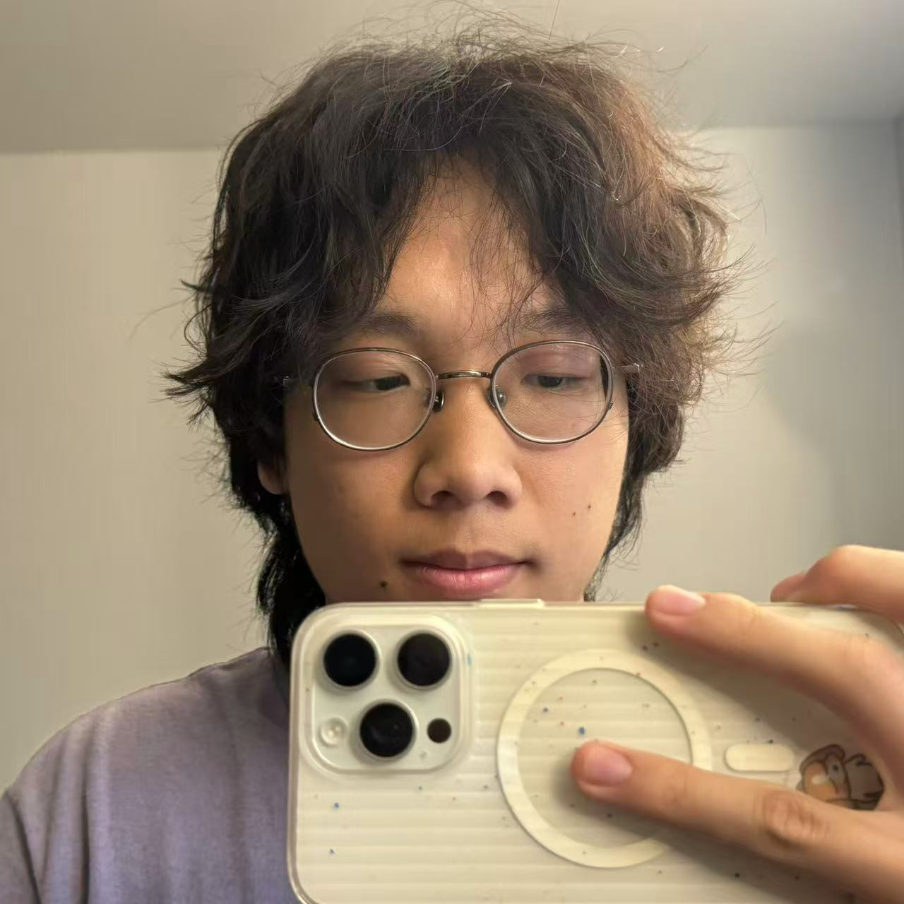
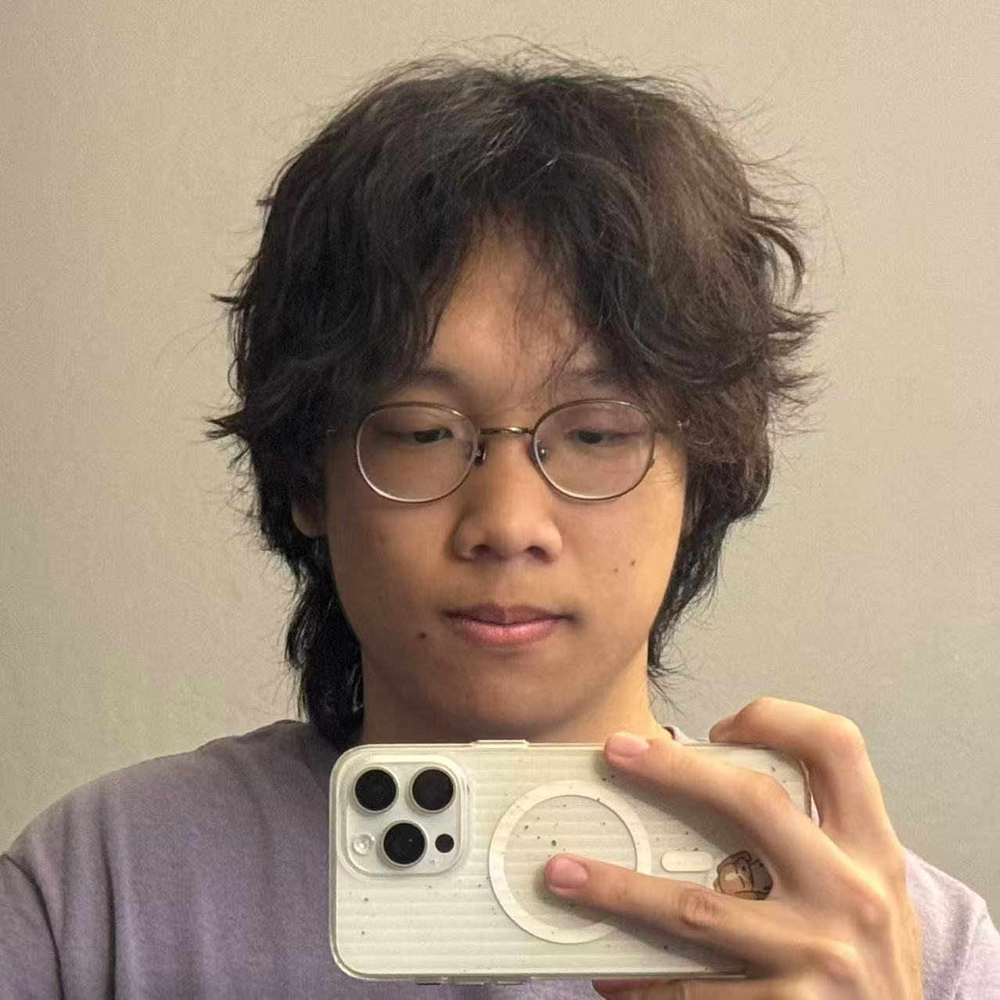
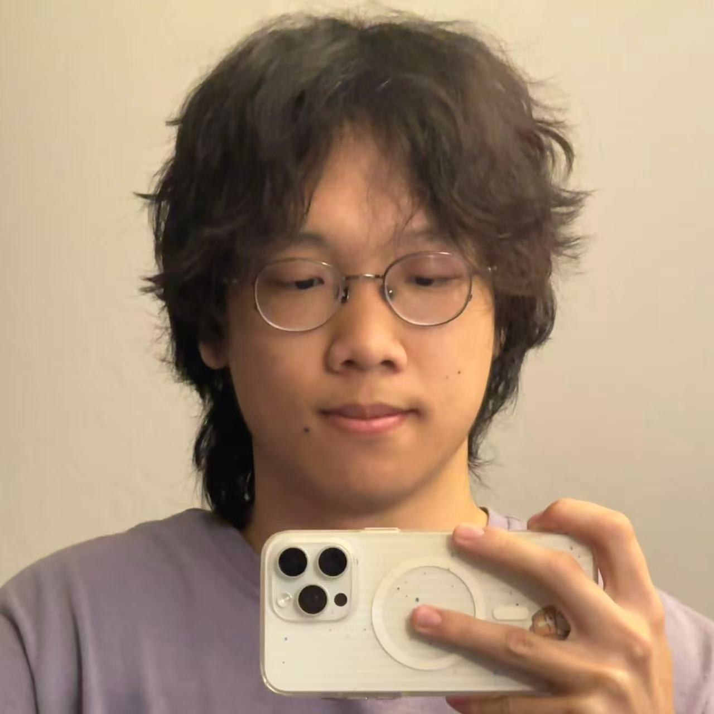

Part 1: Selfie: The Wrong Way vs. The Right Way
Close-up (20cm)

24mm at 20cm - strong distortion
Medium Distance (50cm)

24mm at 50cm - moderate perspective
Far + Zoom (120cm)

120mm at 120cm - natural perspective
Why This Happens
Perspective distortion occurs due to varying distances from camera to facial features. At 20cm, the nose-to-camera distance is much smaller relative to ear-to-camera distance, causing exaggerated proportions. At 120cm with telephoto lens (120mm), distance ratios between features become more uniform, producing natural perspective.